|
Jacob Bringewatt
Joint Center for Quantum Information and Computer Science (QuICS) Office: ATL3303 E-Mail: jbringew (at) umd.edu |
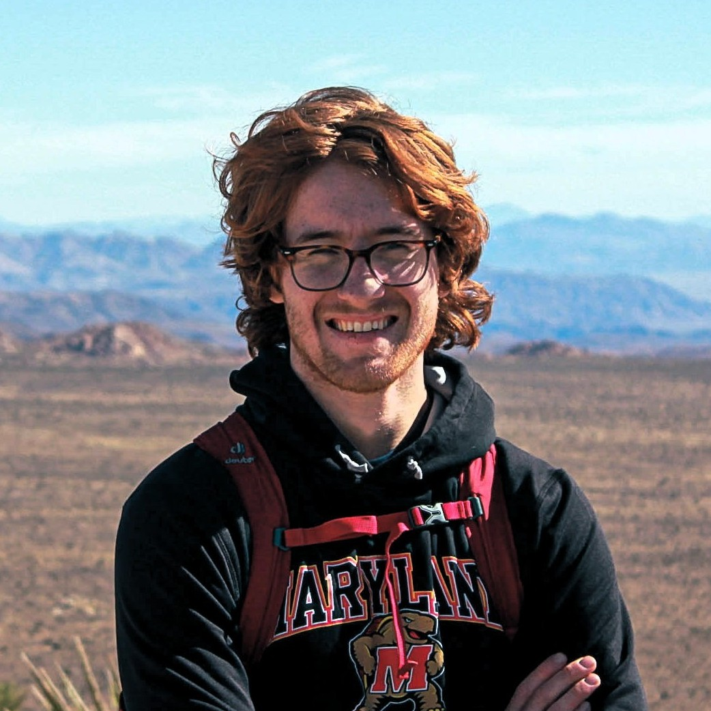 |
|
| |
I am a Ph.D. candidate in theoretical physics at the University of Maryland, College Park. I study a variety of topics relating to quantum information and quantum computation.
I am affiliated with the Joint Center for Quantum Information and Computer Science (QuICS) and the Joint Quantum Institute (JQI) at the University of Maryland, where I am fortunate to be advised by Alexey Gorshkov. I have also had the opportunity to work extensively with Michael Jarret and Zohreh Davoudi, as well as many postdocs, fellow graduate students, and undergraduates.
I received my bachelor's degree in physics also from the University of Maryland, where I was a Banneker/Key scholar. I had excellent undergraduate research advisors in William Dorland and Stephen Jordan.
Quantum information science offers a remarkable promise: by thinking practically about how quantum systems can be put to work to solve computational and information processing tasks, we gain novel insights into the foundations of quantum theory and computer science. Or conversely, by (re)considering the fundamental physical building blocks of computers and sensors, we enable a potential technological revolution, with major impacts for computational and experimental physics.
My research takes these promises seriously. I study problems at the intersection of quantum physics, computer science, and information theory that require, in an inseperable way, the techniques and insights of all three disciplines. My goal is to develop a deeper understanding quantum many-body systems through the lens of their information-processing capacity and to create practical classical and quantum algorithms for simulating such systems.
Also see my Google Scholar profile. * denotes equal contribution.
|
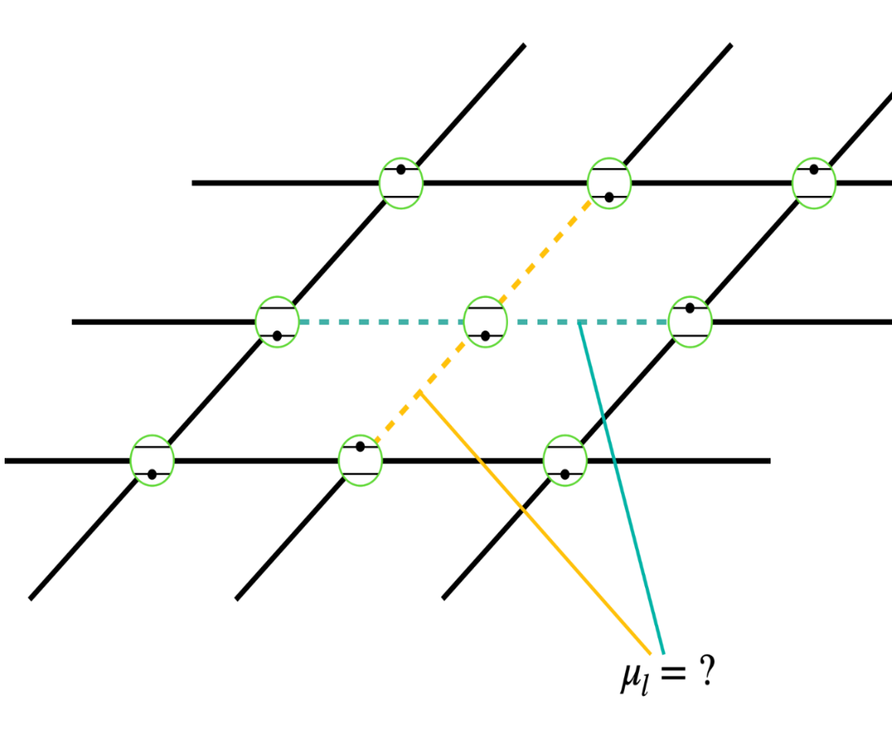
|
"Estimation of Hamiltonian parameters from thermal states." |
L P Garcia-Pintos, K Bharti, J Bringewatt, H Dehghani, A Ehrenberg, N Y Halpern, A V Gorshkov Preprint. (2024), [arXiv:2401.10343]
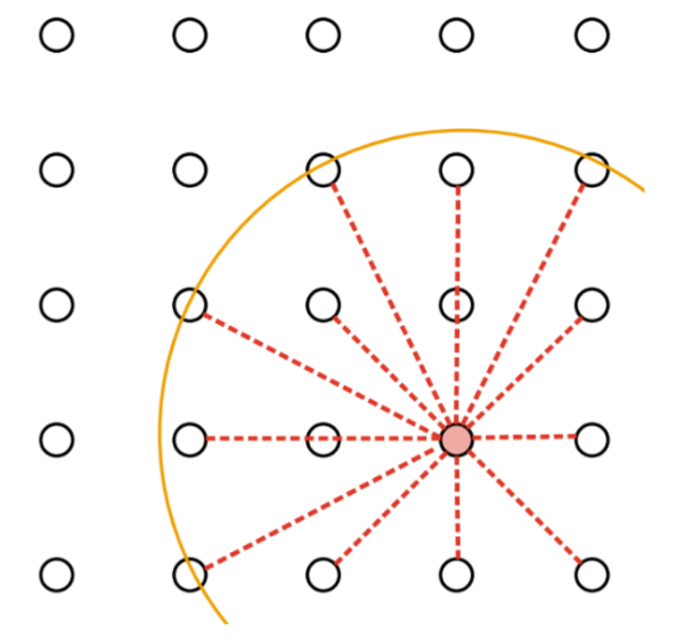
|
"Quantum algorithms for simulating nuclear effective field theories." |
J D Watson, J Bringewatt, A M Childs, A V Gorshkov, Z Davoudi Preprint. (2023), [arXiv:2312.05344]
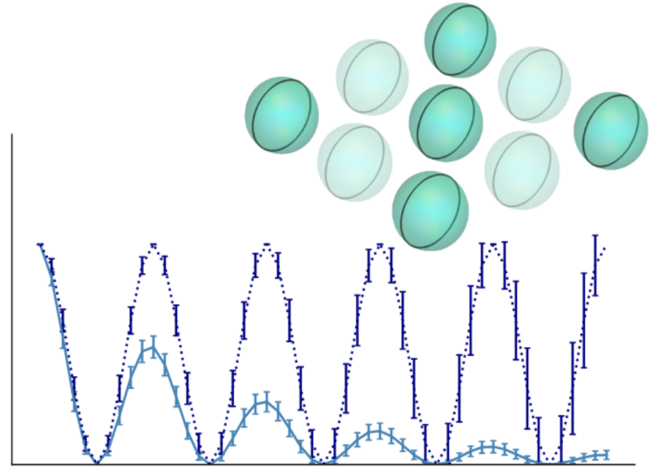
|
"Quantum sensing with erasure qubits." |
P Niroula, J Dolde, X Zheng, J Bringewatt, A Ehrenberg, K C Cox, J Thompson, M J Gullans, S Kolkowitz, A V Gorshkov Preprint. (2023), [arXiv:2310.01512]
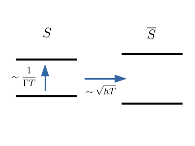
|
"On the stability of solutions to Schrodinger's equation short of the adiabatic limit." |
J Bringewatt*, M Jarret*, T C Mooney* Preprint. (2023), [arXiv:2303.13478] | |
| 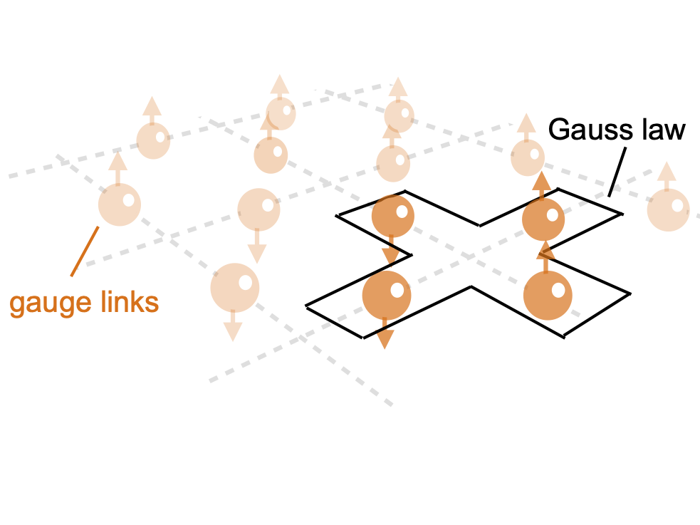 |
"Randomized measurement protocols for lattice gauge theories." J Bringewatt, J Kunjummen, N Mueller Quantum 8, 1300. (2024), [arXiv:2303.15519] |
| 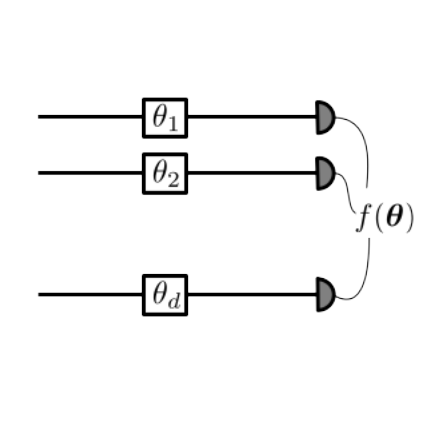 |
"Optimal function estimation with photonic quantum sensor networks." J Bringewatt*, A Ehrenberg*, T Goel*, A V Gorshkov. Phys. Rev. Research 6, 013246 (2024), [arXiv:2401.16472] |
|
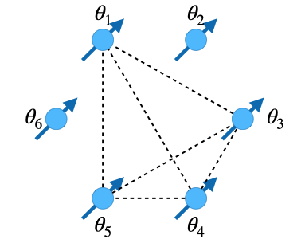
|
"Minimum entanglement protocols for function estimation." |
A Ehrenberg*, J Bringewatt*, A V Gorshkov Phys. Rev. Research 5, 033228 (2023), [arXiv:2110.07613]
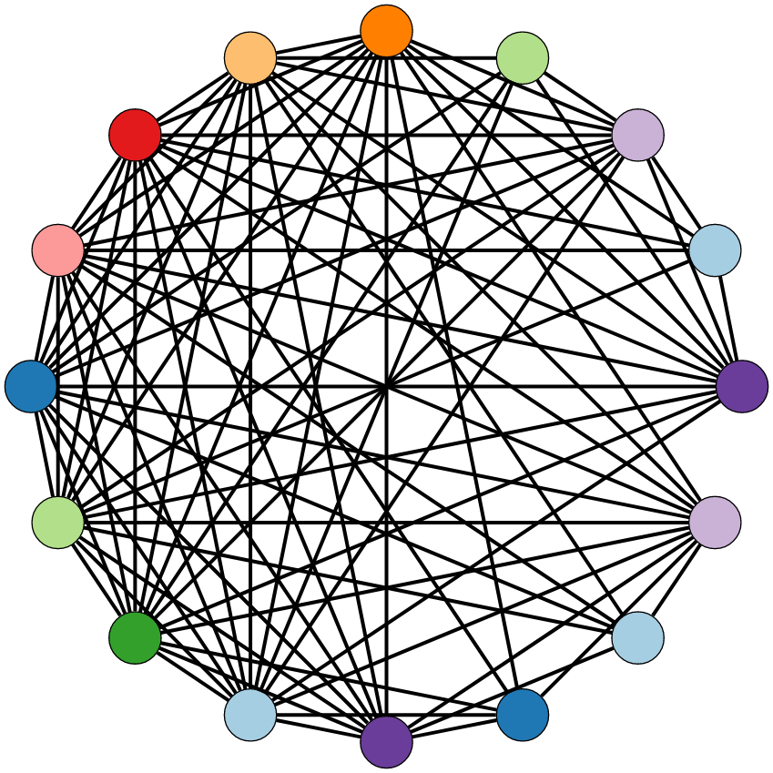
|
"Parallelization techniques for quantum simulation of fermionic systems." |
J Bringewatt, Z Davoudi Quantum 7, 975 (2023), [arXiv:2207.12470]
|
"Lower bounds on quantum annealing times." |
L P Garcia-Pintos, L T Brady, J Bringewatt, Y-K Liu. Phys. Rev. Lett. 130, 140601 (2023), [arXiv:2210.15687] | |
|
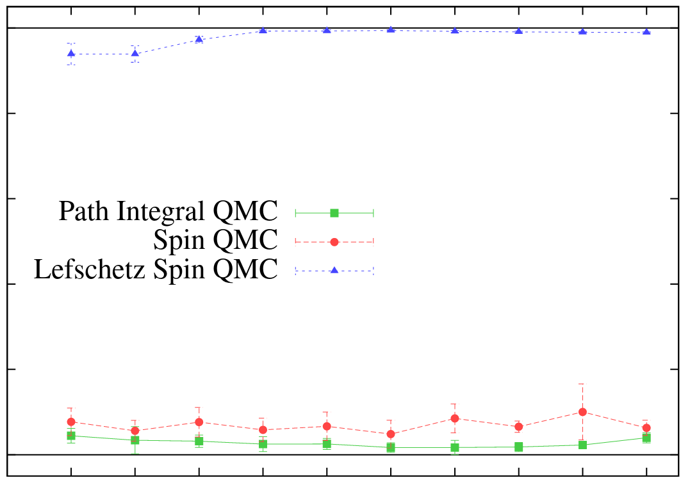
|
"Lefschetz thimble quantum Monte Carlo for spin systems." |
T C Mooney, J Bringewatt, N C Warrington L T Brady Phys. Rev. B 106, 214416 (2022), [arXiv:2110.10699]
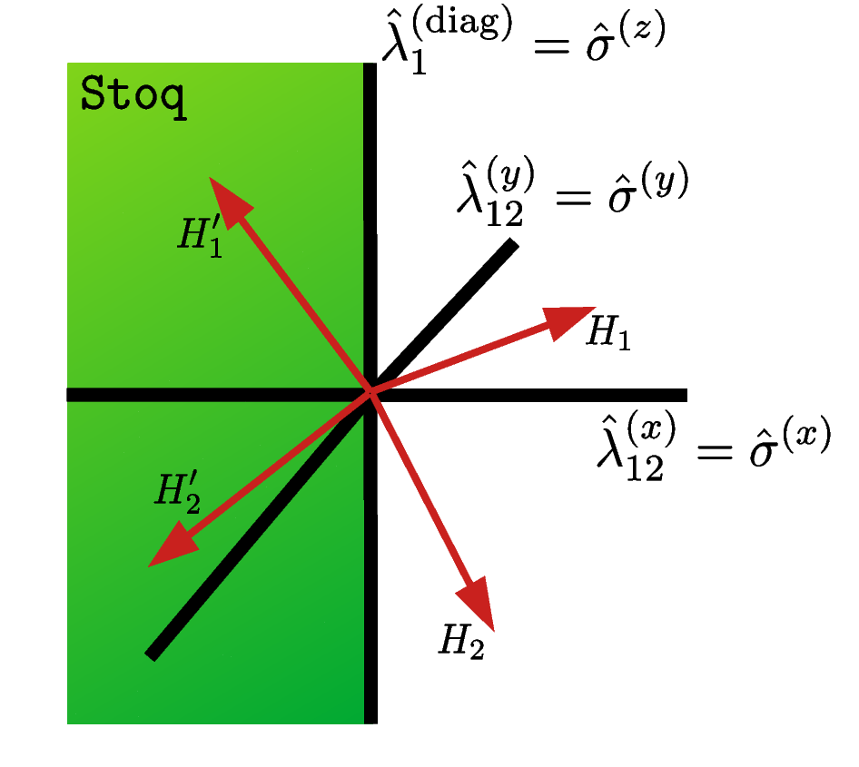
|
"Simultaneous stoquasticity." |
J Bringewatt, L T Brady Phys. Rev. A 105, 062601 (2022), [arXiv:2202.08863] | |
|
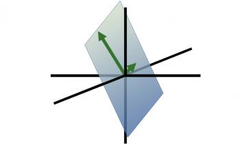
|
"Protocols for estimating multiple functions with quantum sensor networks: geometry and performance." |
J Bringewatt, I Boettcher, P Niroula, P Bienias, A V Gorshkov Phys. Rev. Research 3, 033011 (2021), [arXiv:2104.09540]
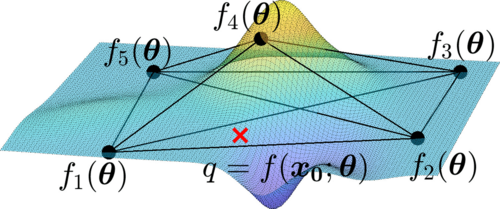
|
"Optimal measurement of field properties with quantum sensor networks." |
T Qian, J Bringewatt, I Boettcher, P Bienias, A V Gorshkov Phys. Rev. A (Letter) 103, L030601 (2021), [arXiv:2011.01259]
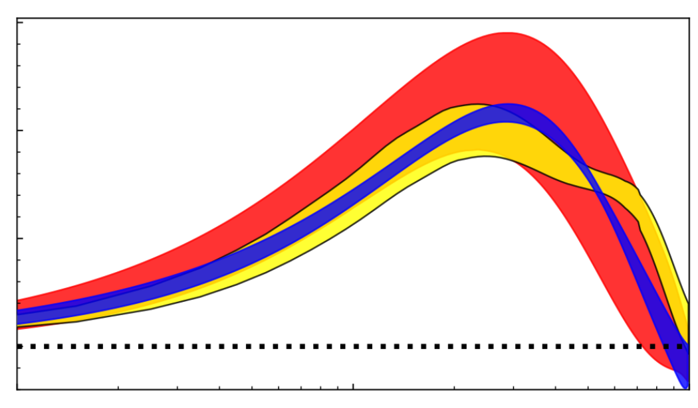
|
"Confronting lattice parton distributions with global QCD analysis." |
J Bringewatt, N Sato, W Melnitchouk, J Qiu, F Steffens, M Constantinou Phys. Rev. D. 103, 016003 (2021), [arXiv:2010.00548] | |
|
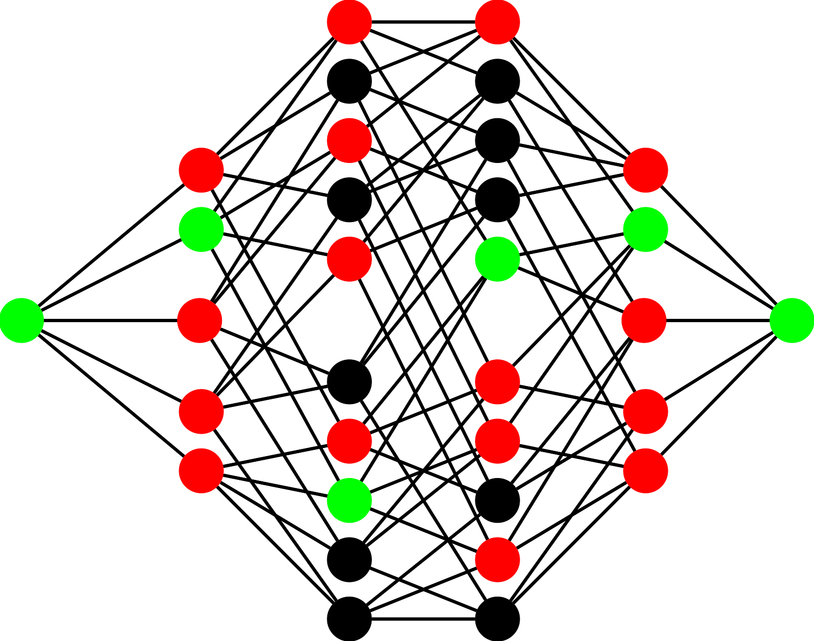
|
"Effective gaps are not effective: quasipolynomial classical simulation of obstructed stoquastic Hamiltonians." |
J Bringewatt*, M Jarret* Phys. Rev. Lett. 125, 170504 (2020), [arXiv:2004.08681] | |
|
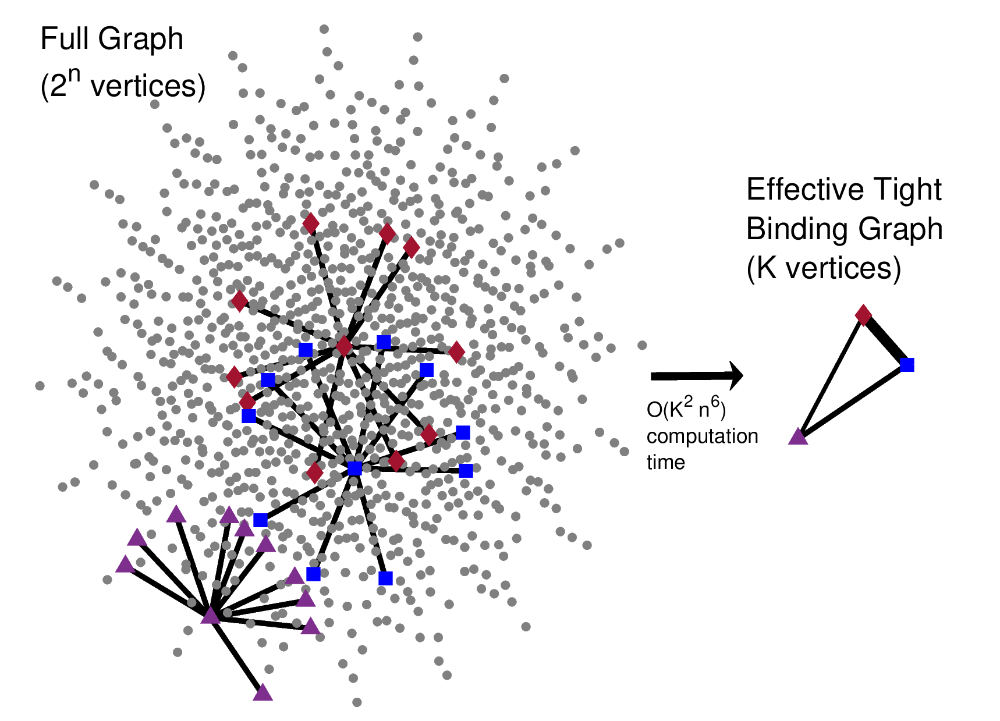
|
"Polynomial time algorithms for estimating spectra of adiabatic Hamiltonians." |
J Bringewatt, W Dorland, SP Jordan Phys. Rev. A 100 (3), 032336 (2019), [arXiv:1905.07461] Editors' Suggestion. | |
|
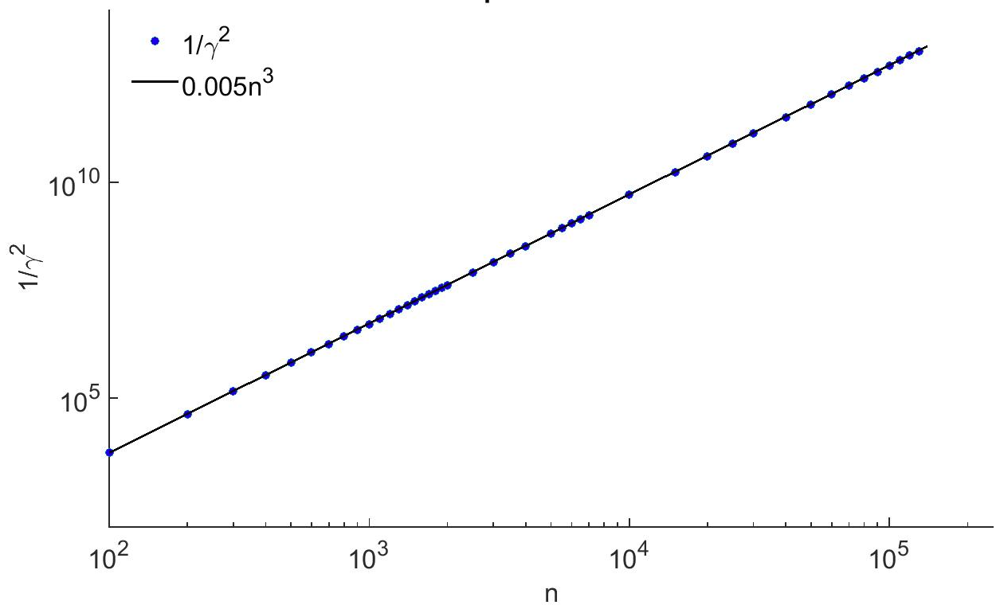
|
"Diffusion Monte Carlo approach versus adiabatic computation for local Hamiltonians." |
J Bringewatt, W Dorland, SP Jordan, A Mink Phys. Rev. A 97 (2), 022323 (2018), [arXiv:1709.03971]
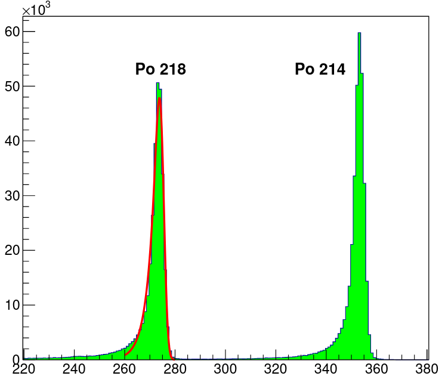
|
"Study of radon reduction in gases for rare event search experiments." |
K Pushkin, C Akerlof, D Anbajagane, J Armstrong, M Arthurs, J Bringewatt, T Edberg, C Hall, M Lei, R Raymond, M Reh, D Saini, A Sander, J Schaefer, D Seymour, N Swanson, Y Wang, W Lorenzon Nucl. Instrum. Methods Phys. Res., Sect. A 903, 267-276 (2018), [arXiv:1805.11306] | |
Recordings of publicly available talks can be found here. See my CV for a full list.
My talk on "Uncertainty Relations for Metrology and Computation" given at the Perimeter Institute on December 11, 2023 can be found here. Based primarily on arXiv:2110.07613, arXiv:2210.15687, and arXiv:2303.13478.
My outgoing fellow talk as a Department of Energy Computational Science Graduate Fellow (2023). Aimed at a general computational science audience.
My Three Minute Thesis (3MT) presentation on quantum metrology (2022). Aimed at a general audience.
Figuring out how to explain my research in non-technical terms is both an enjoyable challenge and, I think, an important part of being a scientist. While the majority of my time is spent communicating with other physicists, I enjoy the process of trying to distill my research to the big ideas for a broader audience.
In particular, I wrote an essay called Spherical Cows which explains my work on toy models for adiabatic quantum computing for a general audience (see here for technical paper). It won the DOE Computational Science Graduate Fellowship Communicate Your Science contest.
I was one of four winners of the campus-level Three Minute Thesis contest at the University of Maryland in 2022. That talk can be seen as either a live version or as a professionally recorded video version.
I also volunteer for the Skype a Scientist program where I get to chat about physics with students from elementary school to high school. Sometimes I get to answer fun questions like "What happens when you put a magnet in lava?"